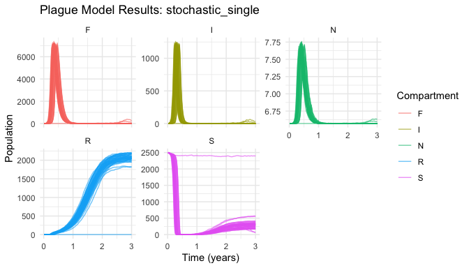
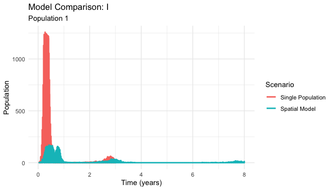
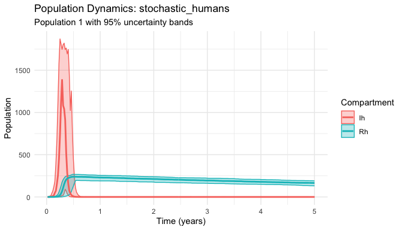

Stochastic plague transmission modeling for epidemiological research and public health applications
The yersinia package provides a comprehensive toolkit for modeling plague transmission dynamics using realistic stochastic simulation. Built on the robust odin.dust framework, it captures the complex biological processes that drive plague outbreaks, including demographic stochasticity, spatial spread, and multi-host transmission cycles.
Why Stochastic Models?
Traditional deterministic plague models fail to capture: - Small population effects where random events drive extinction/persistence - Spatial heterogeneity in transmission and population structure - Uncertainty quantification essential for risk assessment - Realistic outbreak variability observed in natural systems
Key Features
- 🎲 Stochastic simulation with demographic noise and realistic population dynamics
- 🗺️ Spatial metapopulations with migration and local adaptation
- 📚 Evidence-based parameters from historical and contemporary plague research
- 🏥 Multi-host dynamics including rat-flea-human transmission cycles
- 📊 Professional analysis tools for R₀, outbreak metrics, and spatial patterns
- 📈 Publication-ready plotting with uncertainty quantification
Installation
Install the development version from GitHub:
# install.packages("pak")
pak::pak("flmnh-ai/plague-model")Quick Start
library(yersinia)
set.seed(42)
# Run a basic plague model
results <- run_plague_model(
scenario = "keeling-gilligan", # Keeling & Gilligan (2000) parameters
years = 3,
n_particles = 50 # 50 stochastic replicates
)
# Built-in plotting with uncertainty bands
plot(results)
Core Capabilities
Evidence-Based Parameter Sets
# Load curated parameter sets from the literature
params <- load_scenario("historical") # Medieval Black Death parameters
print(params)
#> 🦠 Plague Scenario (historical)
#> 📄 Biological parameters for historical plague outbreaks (14th-17th centuries)
#> 📚 Source: Historical analysis and paleoepidemiology
#>
#> 🐀 Rat Population Parameters:
#> r_r = 6.000 # Rat population growth rate (per year)
#> d_r = 0.150 # Natural death rate of rats (per year)
#> p = 0.980 # Probability of inherited resistance
#>
#> 🦟 Flea Parameters:
#> K_f = 5.000 # Flea carrying capacity per rat
#> r_f = 15.000 # Flea reproduction rate (per year)
#> d_f = 8.000 # Death rate of free fleas (per year)
#> a = 0.003 # Flea search efficiency
#>
#> 🔬 Disease Parameters:
#> beta_r = 6.000 # Rat infection rate from fleas (per year)
#> m_r = 25.000 # Infected rat mortality rate (per year)
#> g_r = 0.010 # Probability rat survives infection
#>
#> 👤 Human Parameters:
#> r_h = 0.030 # Human population growth rate (per year)
#> d_h = 0.080 # Natural death rate of humans (per year)
#> beta_h = 0.015 # Human infection rate from fleas
#> m_h = 35.000 # Human recovery rate (per year)
#> g_h = 0.050 # Probability human survives infection
#>
#> ⚙️ Other Parameters:
#> mu_r = 0.020 # Rat movement rate (per year)
#> mu_f = 0.005 # Flea movement rate (per year)
#>
#> 📈 Basic Reproduction Number (R₀): 596.092 ✅ (Disease can spread)
# Calculate basic reproduction number
R0 <- calculate_R0(params)
cat("Historical R₀:", round(R0, 2))
#> Historical R₀: 596.09Professional Analysis Tools
# Comprehensive outbreak analysis
outbreak_stats <- results |>
calculate_outbreak_metrics(compartment = "I") |>
summarize_outbreak_metrics()
print(outbreak_stats[c("outbreak_probability", "mean_peak", "mean_duration")])
#> # A tibble: 1 × 3
#> outbreak_probability mean_peak mean_duration
#> <dbl> <dbl> <dbl>
#> 1 1 1185. 0.849Spatial Modeling
# Multi-population spatial model
spatial_results <- run_plague_model(
scenario = "modern-estimates",
npop = 16, # 4x4 spatial grid
K_r = 8000, # Total rat carrying capacity
years = 8,
n_particles = 30
)
# Compare single vs spatial dynamics
plot_comparison(
list("Single Population" = results, "Spatial Model" = spatial_results),
compartment = "I"
)
Historical Applications
# Model Black Death scenario
black_death <- run_plague_model(
scenario = "historical",
include_humans = TRUE, # Include human transmission
years = 5,
n_particles = 40
)
# Focus on human epidemic dynamics
plot_dynamics(black_death, compartments = c("Ih", "Rh"))
Model Types
| Model | Description | Use Case |
|---|---|---|
| Single Population | Basic rat-flea dynamics | Parameter exploration, R₀ analysis |
| Spatial | Multi-population with migration | Landscape epidemiology, spatial spread |
| Multi-host | Rat-flea-human transmission | Epidemiological studies, intervention planning |
| Seasonal | Environmental forcing | Climate effects, annual cycles |
Parameter Sets
| Scenario | Source | Description | R₀ |
|---|---|---|---|
"defaults" |
Package defaults | Baseline parameters | 581.66 |
"keeling-gilligan" |
Keeling & Gilligan (2000) | Foundational metapopulation model | 581.66 |
"modern-estimates" |
Contemporary research | Current parameter estimates | 684.93 |
"historical" |
Medieval records | Black Death era parameters | 596.09 |
Getting Help
- 📖 Comprehensive tutorial:
vignette("yersinia-intro") - 🔍 Function reference:
help(package = "yersinia") - 🎯 Main modeling function:
?run_plague_model - 📐 Deterministic comparisons:
vignette("reference-deterministic-models")
Related Work
- Keeling & Gilligan (2000): Foundational plague metapopulation model (Nature)
- odin.dust framework: Stochastic compartmental modeling (CRAN)
License: MIT | Bugs: GitHub Issues